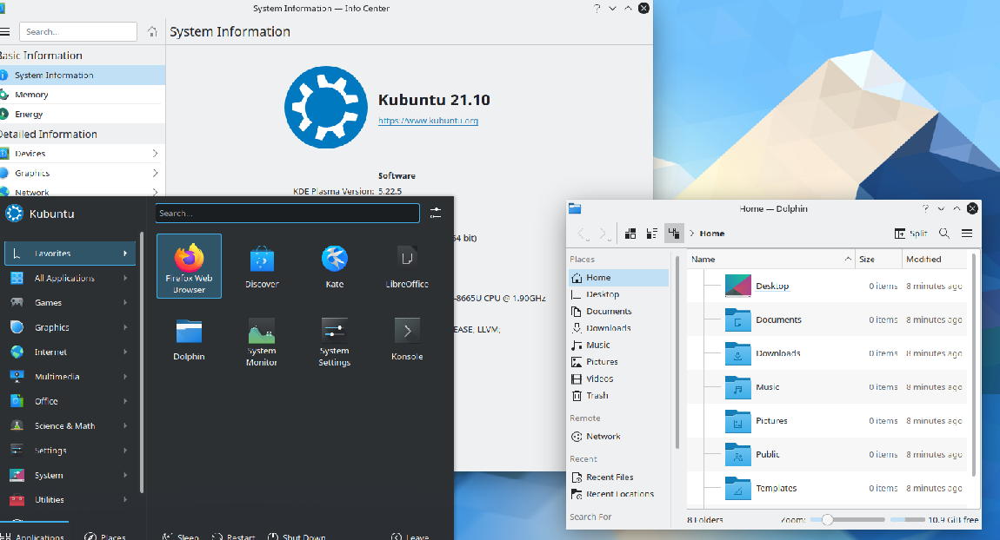

|

Click here for resources used!
|
| For the Linux Distro Virtual Machine project, I choose Kubuntu as my Linux distribution to run on a virtual computer. The goal was to set up the virtual machine,and explore the Graphical User Interface. I ran my Kubuntu machine by adjusting the VirtualBox program to it's updated requirements. |
|
Click here for the code!
|
| For the Spectrum V project, the goal was to replicate the artpiece "Spectrum V" by Ellsworth using HTML and CSS codes. I successfully completed it using my learning of tables and id tags.I was able to customize the text using a unique fonts and sizes. |